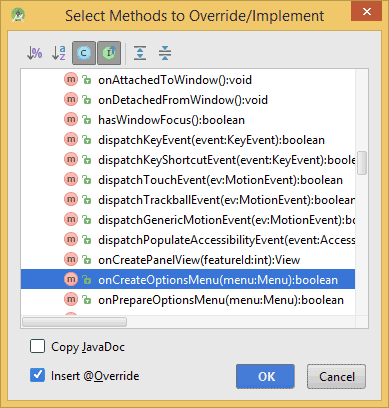
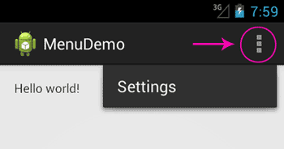
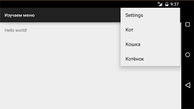
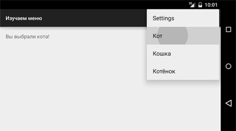
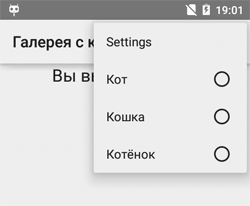

Меню
Android поддерживает несколько типов меню. Первый - на телефоне есть отдельная кнопка Menu (в старых телефонах), нажатие которой вызывает меню. В новых устройствах отдельную кнопку убрали, заменив на значок меню в виде трёх точек в вертикальной ориентации. Второй тип - контекстное меню, которое появляется при нажатии и удерживания пальца на экране в нужном месте (также можно нажать и удерживать центральную кнопку на телефоне). Контекстное меню в свою очередь может иметь подменю. Сегодня мы познакомимся с первым типом меню. В данной статье будет рассматриваться работа с меню на новых устройствах под управлением Android 4.0 и выше.
В шаблоне Empty Activity нет меню, поэтому мы создадим его сами. Это поможет вам понять принцип работы и получить общее представление о проекте. Запоминать названия классов, методов и код для обработки выбора пунктов меню необязательно. В других шаблонах меню будет встроено и вы можете сразу использовать его.
Создайте новый проект на основе Empty Activity и запустите его. Никакого меню пока нет.
Создадим несколько строковых ресурсов в файле res/values/strings.xml, которые будут отвечать за пункты меню:
<string name="action_settings">Settings</string>
<string name="action_cat_male">Кот</string>
<string name="action_cat_female">Кошка</string>
<string name="action_kitten">Котёнок</string>
Теперь создайте новую папку menu в папке res (правый щелчок мыши на папке res, | New | Directory). Далее создайте в созданной папке файл menu_main.xml - имя указывает, что меню относится к основной активности MainActivity (правый щелчок мыши на папке menu | New | Menu Resource File). Если вы будете создавать приложение с несколькими экранами, то у каждой активности будет отдельное меню со своими настройками. Пока откроем файл menu_main.xml и добавим в полученный шаблон свой код:
<menu xmlns:android="http://schemas.android.com/apk/res/android"
xmlns:app="http://schemas.android.com/apk/res-auto"
xmlns:tools="http://schemas.android.com/tools"
tools:context=".MainActivity">
<item
android:id="@+id/action_settings"
android:orderInCategory="100"
android:title="@string/action_settings"
app:showAsAction="never"/>
</menu>
Откроем файл MainActivity. Сейчас в нём только один метод onCreate(). Добавим новый метод onCreateOptionsMenu(). Именно данный метод отвечает за появление меню у активности. Выберите в студии меню Code | Override Methods... и в следующим окне начинайте вводить название метода по первым буквам. Можно вводить по первым заглавным буквам, т.е. ocom (onCreateOptionsMenu), чтобы быстро найти нужную строку. Нажимаем кнопку OK и получаем заготовку.

@Override
public boolean onCreateOptionsMenu(Menu menu) {
return super.onCreateOptionsMenu(menu);
}
Добавляем в заготовку метод, который берёт данные из ресурсов меню и преобразует их в пункты меню на экране.
@Override
public boolean onCreateOptionsMenu(Menu menu) {
getMenuInflater().inflate(R.menu.menu_main, menu);
return true;
}
В методе inflate() вы указываете на ресурс меню (R.menu.menu_main) и объект класса Menu.
Запустите проект. Теперь в правой части заголовка вы увидите значок из трёх точек, выстроенных в вертикальную линию. Нажмите на значок, чтобы увидеть пункт меню Settings.

Как не трудно догадаться, элемент item отвечает за отдельный пункт меню. Добавим ещё три пункта по такому же принципу, меняя только идентификатор и текст для меню:
<menu xmlns:android="http://schemas.android.com/apk/res/android"
xmlns:app="http://schemas.android.com/apk/res-auto"
xmlns:tools="http://schemas.android.com/tools"
tools:context=".MainActivity">
<item
android:id="@+id/action_settings"
android:orderInCategory="100"
android:title="@string/action_settings"
app:showAsAction="never"/>
<item
android:id="@+id/action_cat1"
android:orderInCategory="100"
android:title="@string/action_cat_male"
app:showAsAction="never"/>
<item
android:id="@+id/action_cat2"
android:orderInCategory="100"
android:title="@string/action_cat_female"
app:showAsAction="never"/>
<item
android:id="@+id/action_cat3"
android:orderInCategory="100"
android:title="@string/action_kitten"
app:showAsAction="never"/>
</menu>
Запустите проект и попробуйте снова вызвать меню. Вы увидите три новых пункта.

Атрибут app:showAsAction="never" указывает, что пункты меню никогда не должны выводиться в заголовке приложения, а всегда находиться за тремя точками. Если заменить на значение ifRoom, то пункт сразу выведется в заголовке. Если таких пунктов будет много, то они будут только мешаться. Как правило, в таком варианте выводят очень короткое слово или значок для частых операций, чтобы избежать лишнего щелчка на три точки.
Пока пункты меню не выполняют полезной работы. Любое нажатие на пункт просто закрывает меню без видимых последствий. Мы ещё не написали код для обработки нажатий.
Выбор пунктов меню
Мы научились создавать меню. Но пока оно бесполезно, так как пункты меню никак не реагируют на наши нажатия. Для обработки нажатий пунктов меню служит другой метод onOptionsItemSelected(). Добавим метод по такому же принципу, как для предыдущего примера. Получим заготовку.
@Override
public boolean onOptionsItemSelected(MenuItem item) {
return super.onOptionsItemSelected(item);
}
Параметр item отвечает за пункт меню. Вам следует получить идентификатор меню через метод getItemId() и указать для него код. Так как обычно меню состоит из нескольких пунктов, то удобно использовать конструкции if/else или switch. Для вывода информации воспользуемся текстовой меткой. Добавьте на экран активности компонент TextView. Можете использовать имеющийся TextView с надписью "Hello World!", только присвойте ему идентификатор.
<TextView
android:id="@+id/textView"
android:layout_width="wrap_content"
android:layout_height="wrap_content"
android:text="Hello World!"/>
Добавим код в заготовку для выбранного пункта меню:
@Override
public boolean onOptionsItemSelected(MenuItem item) {
// получим идентификатор выбранного пункта меню
int id = item.getItemId();
TextView infoTextView = (TextView) findViewById(R.id.textView);
// Операции для выбранного пункта меню
switch (id) {
case R.id.action_cat1:
infoTextView.setText("Вы выбрали кота!");
return true;
case R.id.action_cat2:
infoTextView.setText("Вы выбрали кошку!");
return true;
case R.id.action_cat3:
infoTextView.setText("Вы выбрали котёнка!");
return true;
default:
return super.onOptionsItemSelected(item);
}
}
Запустите приложение, вызовите меню и выберите любой пункт меню. В текстовом поле должно появиться сообщение.

Существует альтернативный способ через XML, похожий на обработку щелчков кнопки (начиная с Android 3.0). Вы можете добавить атрибут android:onClick в ресурсах меню, и вам не нужно использовать вызов метода onOptionsItemSelected(). При помощи android:onClick вы можете указать нужный метод при выборе пункта меню. Добавьте данный атрибут к пункту Settings
<item
android:id="@+id/action_settings"
android:title="@string/action_settings"
android:orderInCategory="100"
android:onClick="onSettingsMenuClick"
app:showAsAction="never" />
Теперь в коде активности напишем следующее:
// у атрибута пункта меню Settings установлено значение android:onClick="onSettingsMenuClick"
public void onSettingsMenuClick(MenuItem item) {
TextView infoTextView = (TextView) findViewById(R.id.textView);
infoTextView.setText("Вы выбрали пункт Settings, лучше бы выбрали кота");
}
Переключатели
Внешний вид пунктов меню можно изменить на вид с переключателями. Для этого нужно добавить элемент group с атрибутом android:checkableBehavior="single":
<menu xmlns:android="http://schemas.android.com/apk/res/android"
xmlns:app="http://schemas.android.com/apk/res-auto"
xmlns:tools="http://schemas.android.com/tools"
tools:context=".MainActivity">
<item
android:id="@+id/action_settings"
android:orderInCategory="100"
android:title="@string/action_settings"
app:showAsAction="never" />
<group android:checkableBehavior="single">
<item
android:id="@+id/action_cat1"
android:orderInCategory="100"
android:title="@string/action_cat_male"
app:showAsAction="never" />
<item
android:id="@+id/action_cat2"
android:orderInCategory="100"
android:title="@string/action_cat_female"
app:showAsAction="never" />
<item
android:id="@+id/action_cat3"
android:orderInCategory="100"
android:title="@string/action_kitten"
app:showAsAction="never" />
</group>
</menu>

Большого смысла в этом режиме я не вижу. И рассматривать его не будем.
Итак, вы получили базовые навыки работы с меню, достаточных для большинства случаев. Если хотите узнать больше, то почитайте дополнительную информацию о меню в разделе Теория.
Дополнительное чтение
Обсуждение статьи на форуме.